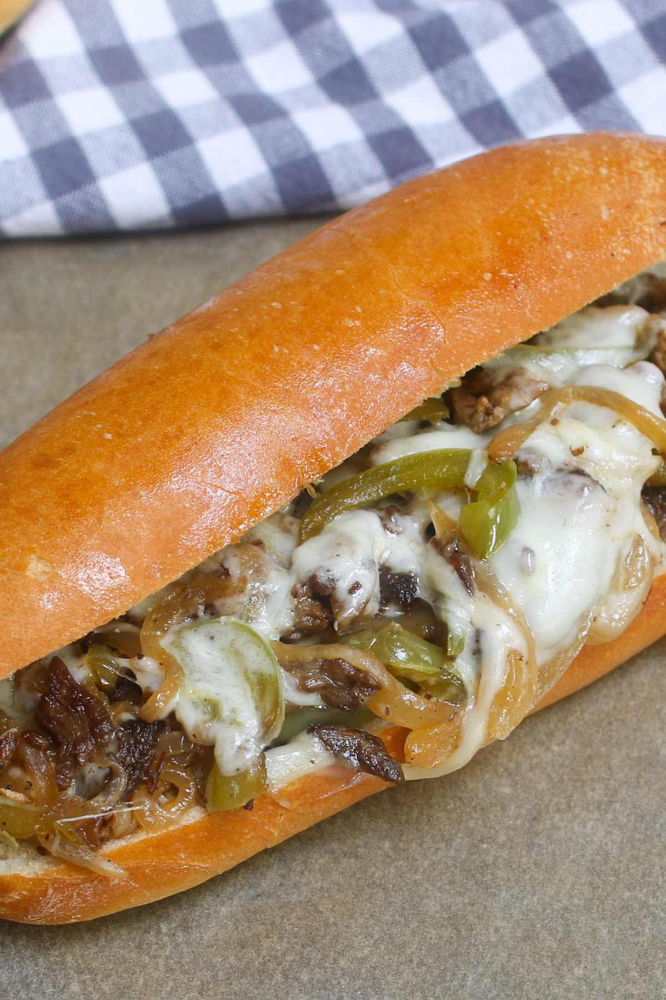

Home
American Philly Cheese-Steak

An American Classic
A Philadelphia favorite for those who seek flavor.
Ingredients
- Shaved Beef
- Mushrooms
- Peppers
- Carmalized onions
- 1 slice of mozarella cheese
- Long Buns
Steps
- Prehead griddle on the max heat level
- Cook shaved beef with peppers, onions, and mushrooms
- Cook until meat is browned
- Put mozarella on the shaved beef with extras
- Serve on a long bun